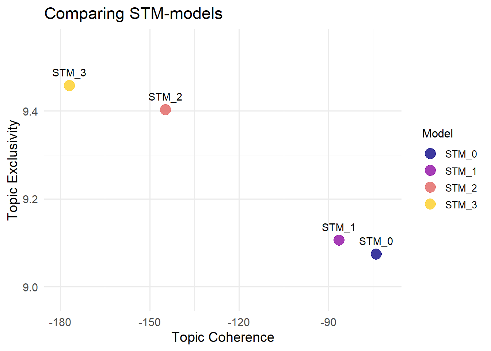

library(tidyverse)
library(quanteda)
library(textclean)
library(textTinyR)
library(tidytext)
library(skimr)
library(polyglotr)
library(deeplr)
library(stopwords)
library(stm)TextPrep
Comparing Tools and Workflows for Data Quality in Basic Text Preprocessing with R
At a Glance
In this tutorial you will learn:
- Enhancing data quality through preprocessing: The tutorial provides a practical guide on how preprocessing methods, such as automated translation, minor text operations and stopword removal, can significantly improve the quality of social media data depended on use case, data types and methods.
- Comparison of tools, packages and strategies: By systematically evaluating and comparing different approaches (e.g. different stopword lists), it is highlighted how they can alter textual content and impact data interpretation and quality.
- Creation and analysis of preprocessing levels: Defining four preprocessing levels offers a structured framework to analyze text data at varying degrees of preparation, helping to understand how preprocessing affects analytical outcomes.
- Applying certain metrics to assess data quality: Text similarity measures such as word count or cosine similarity are used to document differences between the various preprocessing strategies and packages. Also Structural Topic Modeling is used to compare different preprocessing stages using semantic coherence and exclusivity.
1. Introduction
The digitalisation has led to innovations of research objects and research methods. While statistical methods for analyzing numerical data have a long tradition, it is especially the automated analysis of text data that has seen a significant advancements in recent years. Automated text analysis methods are applied to various data sources, including social media data, news paper articles, parliamentary speeches, historical texts or literature. In this introduction, we want to focus on an important, necessary and often times challenging aspect related to data quality in text data: text preprocessing. Text preprocessing can be defined as all changes made to the text data after the data collection and before the data analysis. Its main purpose is to bring the raw data in a form that is then suitable for applying specific research methods, but also to reduce the likelihood of errors. In this sense, text processing is closely linked to the measurement dimension of data quality. On the one hand, text processing can help to reduce measurement errors, by increasing consistency or accuracy. On the other hand, text processing itself can become a source for potential errors. In the TED-On, the “Total Error Framework for Digital Traces of Human Behavior On Online Platforms” (Sen et al. 2021) these errors are referred to as trace reduction errors. According to Sen et al. an example for this error would be: “Researchers might decide to use a classifier that removes spam, but has a high false positive rate, inadvertently removing non-spam tweets. They might likewise discard tweets without textual content, thereby ignoring relevant statements made through hyper-links or embedded pictures/videos” (p. 413).
In this tutorial we aim to explore different levels of text preprocessing and compare as well as recommend various packages, tools and functions to use. Churchill and Singh (2021) distinguish between four levels of text preprocessing.
| Preprocessing level | Preprocessing operations |
|---|---|
| Elementary pattern-based preprocessing | e.g. removal of punctuaction, special characters, symbols, numbers etc. |
| Dictionary-based preprocessing | e.g. removal of stopwords |
| Natural language preprocessing | e.g. stemming, lemmatization |
| Statistical preprocessing | e.g. removal of tokens with high and low frequency |
We will apply operations from the first three preprocessing steps and evaluate how different choices for these steps impact our data. In this respect, data quality is not only a fixed condition but also a set of practices: “doing data quality”. In this tutorial, we emphasize the practice of comparison, i.e. determining which options of preprocessing influence the data (quality) and how. The types and sequence of text preprocessing steps depend on the nature of the data being analyzed and the methods applied. For instance, social media data tends to be noisier compared to more structured sources like newspaper articles or scientific papers. Additionally, the chosen analytical method significantly influences preprocessing requirements. Methods like LDA demand extensive preprocessing, while others, such as BERTopic, function effectively with minimal or no text modifications. In the final step of this tutorial, we will use differently preprocessed text data to apply Structural Topic Modeling (STM) (Roberts, Stewart, and Tingley 2019) and compare differences in the analysis. For this purpose, we created a small social media data set with posts about the Olympic summer games in Paris 2024, supposedly “collected” from the #Olympics2024. For copyright reasons, we have constructed an artificial data set that does not contain any real content. The Olympic summer games can be considered a transnational media event (Hepp 2015), which today is, of course, not only covered by traditional media but is communicatively accompanied on social media.
2. Set up
First, we will load all relevant libraries. Please ensure to have all relevant packages installed using the install.packages() command. We will use and also compare functions from some of the most important text preprocessing and analysis R packages such as quanteda, stringr, textclean or textTinyR. Additionally, we will incorporate specific packages like skimr, polyglotr or deeplr for special purposes.
Finally, we will then load our artificial dataset from the Olympic summer games.
url <- "https://raw.githubusercontent.com/YannikPeters/DQ_Tool_TextPreprocessing/main/data/Olympics_Summer_1_2024.csv"
olympics_data <- readr::read_csv(url, locale = locale(encoding = "Latin1"))
olympics_data# A tibble: 150 × 12
no. tweet_id user_id timestamp tweet_text subtopic language retweet_count
<dbl> <dbl> <dbl> <chr> <chr> <chr> <chr> <dbl>
1 1 226 139 09-08-2024… The pool … Swimmin… en 12
2 2 68257 133 31-07-2024… The fight… Doping … en 47
3 3 44351 197 06-08-2024… THE JOY O… Gold Me… en 28
4 4 95759 170 08-08-2024… Quel chem… Gold Me… fr 34
5 5 11173 106 27-07-2024… The inten… Wrestli… en 46
6 6 23334 177 28-07-2024… We must s… Doping … en 39
7 7 49688 160 04-08-2024… The culmi… Gold Me… en 8
8 8 39066 196 01-08-2024… Cheering … Maratho… en 31
9 9 81586 198 31-07-2024… Jede Leis… Athlete… de 9
10 10 45338 134 03-08-2024… What a ga… Basketb… en 16
# ℹ 140 more rows
# ℹ 4 more variables: like_count <dbl>, reply_count <dbl>, quote_count <dbl>,
# source <chr>3. Application of tools and use case
3.1 Basic data (quality) checks
Let’s start with checking out the basic structure of our data set.
str(olympics_data)spc_tbl_ [150 × 12] (S3: spec_tbl_df/tbl_df/tbl/data.frame)
$ no. : num [1:150] 1 2 3 4 5 6 7 8 9 10 ...
$ tweet_id : num [1:150] 226 68257 44351 95759 11173 ...
$ user_id : num [1:150] 139 133 197 170 106 177 160 196 198 134 ...
$ timestamp : chr [1:150] "09-08-2024 20:14" "31-07-2024 05:42" "06-08-2024 14:25" "08-08-2024 06:41" ...
$ tweet_text : chr [1:150] "The pool is alive with excitement! Who will claim victory in #SwimmingOlympics? The competition is fierce! http"| __truncated__ "The fight against doping is ongoing! Let's support our athletes by promoting #CleanSport at #Olympics2024. #Dop"| __truncated__ "THE JOY OF WINNING A #GOLDMEDAL IS UNMATCHED! http://www.jones.com/ WHO ARE YOU SUPPORTING AT #OLYMPICS2024? #O"| __truncated__ "Quel chemin parcouru ! Les gagnants de la Gold Medal nous ont tous rendus fiers ! #Olympics2024" ...
$ subtopic : chr [1:150] "Swimming Events" "Doping Awareness" "Gold Medal Moments" "Gold Medal Moments" ...
$ language : chr [1:150] "en" "en" "en" "fr" ...
$ retweet_count: num [1:150] 12 47 28 34 46 39 8 31 9 16 ...
$ like_count : num [1:150] 5 54 4 40 51 52 20 93 44 30 ...
$ reply_count : num [1:150] 7 2 10 0 7 7 0 2 1 7 ...
$ quote_count : num [1:150] 1 2 8 0 5 9 8 2 6 2 ...
$ source : chr [1:150] "Twitter Web App" "Twitter Web App" "Twitter for iPhone" "Twitter for iPhone" ...
- attr(*, "spec")=
.. cols(
.. no. = col_double(),
.. tweet_id = col_double(),
.. user_id = col_double(),
.. timestamp = col_character(),
.. tweet_text = col_character(),
.. subtopic = col_character(),
.. language = col_character(),
.. retweet_count = col_double(),
.. like_count = col_double(),
.. reply_count = col_double(),
.. quote_count = col_double(),
.. source = col_character()
.. )
- attr(*, "problems")=<externalptr> Here we find 13 variables and 150 observations.
summary(olympics_data) no. tweet_id user_id timestamp
Min. : 1.00 Min. : 226 Min. :100.0 Length:150
1st Qu.: 38.25 1st Qu.:24485 1st Qu.:128.0 Class :character
Median : 75.50 Median :49100 Median :149.5 Mode :character
Mean : 75.50 Mean :50367 Mean :151.1
3rd Qu.:112.75 3rd Qu.:73639 3rd Qu.:177.0
Max. :150.00 Max. :99451 Max. :200.0
tweet_text subtopic language retweet_count
Length:150 Length:150 Length:150 Min. : 0.00
Class :character Class :character Class :character 1st Qu.:14.25
Mode :character Mode :character Mode :character Median :28.00
Mean :26.85
3rd Qu.:40.00
Max. :50.00
like_count reply_count quote_count source
Min. : 0.00 Min. : 0.00 Min. : 0.000 Length:150
1st Qu.:17.25 1st Qu.: 3.00 1st Qu.: 3.000 Class :character
Median :38.50 Median : 7.00 Median : 5.000 Mode :character
Mean :40.69 Mean : 6.86 Mean : 5.207
3rd Qu.:61.75 3rd Qu.:10.00 3rd Qu.: 8.000
Max. :99.00 Max. :15.00 Max. :10.000 When running the summary() function, the overview might become difficult to interpret depending on the size of the dataframe. Therefore, we recommend R tools that provide basic data quality reports and present the results in a clearer format, such as the skimr package. With skimr, you can obtain an overview of the various variables of our data set, including descriptive statistics and missing values.
skimr::skim(olympics_data)| Name | olympics_data |
| Number of rows | 150 |
| Number of columns | 12 |
| _______________________ | |
| Column type frequency: | |
| character | 5 |
| numeric | 7 |
| ________________________ | |
| Group variables | None |
Variable type: character
| skim_variable | n_missing | complete_rate | min | max | empty | n_unique | whitespace |
|---|---|---|---|---|---|---|---|
| timestamp | 0 | 1 | 16 | 16 | 0 | 150 | 0 |
| tweet_text | 0 | 1 | 73 | 171 | 0 | 145 | 0 |
| subtopic | 0 | 1 | 13 | 24 | 0 | 10 | 0 |
| language | 0 | 1 | 2 | 2 | 0 | 3 | 0 |
| source | 0 | 1 | 15 | 19 | 0 | 4 | 0 |
Variable type: numeric
| skim_variable | n_missing | complete_rate | mean | sd | p0 | p25 | p50 | p75 | p100 | hist |
|---|---|---|---|---|---|---|---|---|---|---|
| no. | 0 | 1 | 75.50 | 43.45 | 1 | 38.25 | 75.5 | 112.75 | 150 | ▇▇▇▇▇ |
| tweet_id | 0 | 1 | 50367.45 | 28499.46 | 226 | 24485.00 | 49099.5 | 73639.00 | 99451 | ▇▇▇▇▇ |
| user_id | 0 | 1 | 151.09 | 29.09 | 100 | 128.00 | 149.5 | 177.00 | 200 | ▆▇▆▇▆ |
| retweet_count | 0 | 1 | 26.85 | 14.50 | 0 | 14.25 | 28.0 | 40.00 | 50 | ▆▆▇▇▇ |
| like_count | 0 | 1 | 40.69 | 26.16 | 0 | 17.25 | 38.5 | 61.75 | 99 | ▇▇▇▆▂ |
| reply_count | 0 | 1 | 6.86 | 4.61 | 0 | 3.00 | 7.0 | 10.00 | 15 | ▇▅▆▃▅ |
| quote_count | 0 | 1 | 5.21 | 3.12 | 0 | 3.00 | 5.0 | 8.00 | 10 | ▇▇▇▅▇ |
3.2 Handling multilingual text data
As the Olympic games are a transnational media event, it is not surprising to receive a multilingual data set. The primary challgenge with multilingual data sets is that common CSS research methods, such as topic modeling or sentiment analysis typically expect text data to be in a single language.
Note
If you use this tutorial on your own data set and it is not a multilingual one, you can skip this part and continue with 3.3.
There are various strategies to handle multilingual data sets. The chosen strategy should depend on the specific context, the methods applied and the research design and questions. We can distinguish three or four main strategies for working with multilingual data sets (see Hauke Licht and Fabienne Lind (2023), Lind et al. (2021)). For this short version, we will discuss three primary strategies: 1) selecting cases, 2) working with multiple language data sets and 3) using machine translation.
Important
1) Selecting cases: a single language
This approach involves selecting cases that contain documents in only one language. For our Twitter/X data set, we could for instance remove all postings that are not in English.
olympics_data_en <- olympics_data %>% dplyr::filter(language == "en")
table(olympics_data_en$language)
en
127 Of course, this strategy might lead to a representation error as specific content is systematically excluded from analysis (in our case twenty tweets). Therefore, let’s explore the other strategies.
2) Multiple single language data sets
Another way of dealing with multilingual data sets is to create language-specific subsamples of our data. The main advantage of this strategy is, that no content is lost due to exclusion or translation errors. However, compared to the other methods there are more validation steps required for each single language data set (for detailed information see Hauke Licht and Fabienne Lind (2023), Lind et al. (2021)). As we have already created a data set which only contains English tweets, we will create two additional dataframes for German and French tweets.
olympics_data_de <- olympics_data %>% dplyr::filter(language == "de")
table(olympics_data_de$language)
de
13 olympics_data_fr <- olympics_data %>% dplyr::filter(language == "fr")
table(olympics_data_fr$language)
fr
10 We only find a few documents that are not in English resulting in very small language subsets. Therefore, this strategy might not be the best for our example data.
3) (Machine) Translation
The third option of dealing with multilingual datasets is to translate the non-English speaking tweets into English. Since this is a just a small, artificial, sample data set, we could actually translate the few tweets manually. In a real case scenario however, analyzing a data set of millions of tweets, you would typically use an automated translation algorithm or method. The main advantage of the translation method is to generate one singular data set, which can then be analyzed using one model. This approach also requires fewer resources. The main disadvantage lies in the potential for translation errors. It is therefore necessary to evaluate the translation method used. For this purpose, let’s translate all non-English tweets with both tools in order to compare the results. The most common translation tools are Google Translator and DeepL. First, we will use the polyglotr and deeplr packages to translate the German text.
#Translation of German posts and creation of translated dataframe using Google Translate
translation_google_de <- polyglotr::google_translate(olympics_data_de$tweet_text, target_language = "en", source_language = "de")
translation_google_de <- sapply(translation_google_de, function(x) x[[1]])
olympics_data_de_google <- olympics_data_de
olympics_data_de_google$tweet_text <- translation_google_deTo access the DeepL API, you need a developer account. You can use this link to reach the registration page. A free account allows you to translate up to 500,000 characters per month and provides access to the DeepL Rest API. To translate text data using DeepL in R, you first need the API-key. When signing up for a developer account, you will automatically receive this key.
#Translation of German posts and creation of translated dataframe using DeepL
translation_deepl_de <- deeplr::translate2(olympics_data_de$tweet_text, target_lang = "EN", auth_key = my_key)
olympics_data_de_deepl <- olympics_data_de
olympics_data_de_deepl$tweet_text <- translation_deepl_de
Note
For this code to work, make sure that you create a my_key object containing your API key.
my_key <- “Your key”
Let’s compare the results for the German tweets.
head(olympics_data_de_google$tweet_text)[1] "Every performance at Olympics24 underlines the hard work and commitment of our athletes! #Olympics2024"
[2] "What a journey it was! The gold medalists made us all proud! #Olympics2024"
[3] "Integrity in sport is important! Let's promote fair competition and say no to doping! #Olympics2024"
[4] "History is being made at the Olympic Swimming Games! Every stroke counts as athletes dive for glory! #Olympics2024"
[5] "It's incredible what's possible in basketball! Who is your favorite team? #Olympics2024"
[6] "The dedication of the athletes to their sport is admirable! The 2024 Olympic Games are a platform for great things! #Olympics2024"head(olympics_data_de_deepl$tweet_text)[1] "Every performance at Olympics24 highlights the hard work and dedication of our athletes! #Olympics2024"
[2] "What a journey it was! The gold medal winners have made us all proud! #Olympics2024"
[3] "Integrity in sport is important! Let's promote fair competition and say no to doping! #Olympics2024"
[4] "History is made at the Swimming Olympics! Every stroke counts as athletes dive for glory! #Olympics2024"
[5] "It's unbelievable what's possible in basketball! Who is your favorite team? #Olympics2024"
[6] "The athletes' dedication to their sport is admirable! The 2024 Olympic Games are a platform for great things! #Olympics2024"A quick comparison shows that the translations seem pretty similar. We can also use certain metrics to determine the degree of similarity. For this example, we will apply cosine similarity. First, we need to unlist our text data, as the COS_TEXT function from the textTinyR package requires a vector as an input.
google_translation_de <- unlist(translation_google_de)
deepl_translation_de <- unlist(translation_deepl_de)
cosine_similarities_de <- textTinyR::COS_TEXT(google_translation_de, deepl_translation_de, separator = " ")
cosine_similarities_de [1] 0.8571429 0.8593378 1.0000000 0.8838835 0.9166667 0.9100315 1.0000000
[8] 0.9058216 0.8839600 0.9655172 0.9233805 0.7825856 0.9285714mean(cosine_similarities_de)[1] 0.9089922With a mean cosine similarity of 0.90 on a scale from 0 to 1, the translations from Google Translate and DeepL are indeed very similar. We can apply the same process for the French postings.
#Translation of French posts and creation of translated dataframe using Google Translate
translation_google_fr <- polyglotr::google_translate(olympics_data_fr$tweet_text, target_language = "en", source_language = "fr")
translation_google_fr <- sapply(translation_google_fr, function(x) x[[1]])
olympics_data_fr_google <- olympics_data_fr
olympics_data_fr_google$tweet_text <- translation_google_fr
#Translation of French posts and creation of translated dataframe using DeepL
translation_deepl_fr <- deeplr::translate2(olympics_data_fr$tweet_text, target_lang = "EN", auth_key = my_key)
olympics_data_fr_deepl <- olympics_data_fr
olympics_data_fr_deepl$tweet_text <- translation_deepl_fr
#compare Google Translate und Deepl translation manually
olympics_data_fr_google$tweet_text [1] "What a journey! The Gold Medal winners made us all proud! #Olympics2024"
[2] "Integrity in sport matters! Let's promote fair competition and say no to doping! #Olympics2024"
[3] "Every Takedown Counts! The competitive spirit is alive at Wrestling2024! #Olympics2024"
[4] "What a journey we have come! Join us for the Closing Ceremony to relive these magical moments. #Olympics2024"
[5] "The teamwork in basketball is incredible! Go for gold! #Olympics2024"
[6] "A race of endurance and spirit! Who will win the Paris Marathon? #Olympics2024"
[7] "The countdown to the fantastic Welcome Ceremony has begun! Are you ready to witness a spectacular spectacle? #Olympics2024"
[8] "What a display of talent! These athletes are making their mark at the 2024 Olympics! #Olympics2024"
[9] "Celebrating the athletes who made their dreams come true by winning gold medals! #Olympics2024"
[10] "Exciting times await us in basketball at the 2024 Olympics! Let the Games begin! #Olympics2024" olympics_data_fr_deepl$tweet_text [1] "What a long way we've come! The Gold Medal winners have made us all proud! #Olympics2024"
[2] "Integrity in sport is important! Let's promote fair competition and say no to doping! #Olympics2024"
[3] "Every Takedown counts! The spirit of competition is alive and well at Wrestling2024! #Olympics2024"
[4] "We've come a long way! Join us for the Closing Ceremony to relive these magical moments. #Olympics2024"
[5] "The teamwork that goes into basketball is incredible! Go for the gold! #Olympics2024"
[6] "A race of endurance and spirit! Who will win the Paris Marathon? #Olympics2024"
[7] "The countdown to the fantastic welcome ceremony has begun! Are you ready for a great show? #Olympics2024"
[8] "What a demonstration of talent! These athletes are making their mark at the 2024 Olympics! #Olympics2024"
[9] "Let's celebrate the athletes who made their dreams come true by winning gold medals! #Olympics2024"
[10] "Exciting times await us in basketball at the 2024 Olympics! Let the Games begin! #Olympics2024" #unlist french translation data
google_translation_fr <- unlist(translation_google_fr)
deepl_translation_fr <- unlist(translation_deepl_fr)
#calculate cosine similarities for French translation data
cosine_similarities_fr <- textTinyR::COS_TEXT(google_translation_fr, deepl_translation_fr, separator = " ")
cosine_similarities_fr [1] 0.7938566 0.8970852 0.7252407 0.7431605 0.7893522 1.0000000 0.7050240
[8] 0.9375000 0.8970852 1.0000000mean(cosine_similarities_fr)[1] 0.8488304With an average cosine similarity of 0.85, the French translation is slightly less similar than the German one.
If we combine the translated data sets with the original English language data set and then compare the cosine similarity, it is of course higher with 0,98. So in this case, the difference of our combined data set is minimal. This would, of course, be different if the amount of non-English content were higher.
olympics_data_en_deepl_full <- rbind(olympics_data_en, olympics_data_de_deepl, olympics_data_fr_deepl)
olympics_data_en_google_full <- rbind(olympics_data_en, olympics_data_de_google, olympics_data_fr_google)
cosine_similarities_full <- textTinyR::COS_TEXT(olympics_data_en_deepl_full$tweet_text, olympics_data_en_google_full$tweet_text, separator = " ")
mean(cosine_similarities_full)[1] 0.9820347The key question for us is now: Should we use the translation of DeepL or Google Translate? Generally, DeepL is considered to be more accurate than Google Translate (e.g. here). Still, Google Translate has proven to be highly accurate for calculating topic models (Vries, Schoonvelde, and Schumacher 2018). In current research, both tools are considered suitable. For the translation of Spanish idiomatic expressions into English, Hidalgo-Ternero (2021) found DeepL to perform slightly better, with an average accuracy rate of 89%, than Google Translate at 86%. Sebo and Lucia (2024) did not find significant differences in the accuracy of the two tools. One of the major advantages of Google Translate is that it can be applied to significantly more languages than DeepL. As we had to translate only two languages in our example data, we will use DeepL for this example.
url_2 <- "https://raw.githubusercontent.com/YannikPeters/DQ_Tool_TextPreprocessing/main/data/olympics_data_en_deepl_full.csv"
olympics_data_en_full <- readr::read_csv(url_2, locale = locale(encoding = "Latin1"))
olympics_data_en_full# A tibble: 150 × 12
no. tweet_id user_id timestamp tweet_text subtopic language retweet_count
<dbl> <dbl> <dbl> <chr> <chr> <chr> <chr> <dbl>
1 1 226 139 09-08-2024… The pool … Swimmin… en 12
2 2 68257 133 31-07-2024… The fight… Doping … en 47
3 3 44351 197 06-08-2024… THE JOY O… Gold Me… en 28
4 5 11173 106 27-07-2024… The inten… Wrestli… en 46
5 6 23334 177 28-07-2024… We must s… Doping … en 39
6 7 49688 160 04-08-2024… The culmi… Gold Me… en 8
7 8 39066 196 01-08-2024… Cheering … Maratho… en 31
8 10 45338 134 03-08-2024… What a ga… Basketb… en 16
9 11 24439 117 11-08-2024… We must s… Doping … en 11
10 12 32959 110 06-08-2024… The spiri… Maratho… en 44
# ℹ 140 more rows
# ℹ 4 more variables: like_count <dbl>, reply_count <dbl>, quote_count <dbl>,
# source <chr>
Important
The translations of DeepL and Google Translate may differ slightly with each new API request due to coincidence or updates to the model. Especially when using Bag of Word models, this can lead to deviations depending on the proportion of translated text. Recent literature also highlighted the importance of using open source models for extrinsic data quality values like reproducibility (Chan et al. 2020), especially since they perform only slightly less accurate compared to the commercial ones (Licht et al. 2024). In R, the authors have currently not found any convincing open source alternative integrated in packages. Open source models like OpusMT can be used in Python via Hugging Face. In R, these models can be accessed via the reticulate package, which offers a connection to Python applications (see here). In future, a another option might be the text package, in which the translation function still has an experimental status.
3.3 Minor text operations
Minor text operations and removing stopwords in text preprocessing are highly dependent on two factors:
a) The text data type
Compared to other types of text data, such as newspaper articles or literature, social media data often features a rather informal communication style and specific characteristics. For instance, the proportion of abbreviations, slang, spelling mistakes, or emojis is usually high, which can be considered as noise (not errors) in the data.
b) The specific method to be applied
Different methods in Computational Social Science require varying strategies of text preprocessing. Methods that use a bag of words approach (BoW), for example, tend to remove a rather high number of different special characters, as these are not regarded as meaningful for interpretation, but rather as disruptive. In contrast, approaches that incorporate context and semantics, such as modern transformer-based models tend to retain characteristics like punctuation marks and generally require less preprocessing steps.
In our case, we will later apply STM, which is based on a bag of word approach. Therefore, we will apply some operations like removing hashtags, punctuaction or URLs. Before we do so, let’s check the length of our documents.
sum(stringr::str_count(olympics_data_en_full$tweet_text, '\\w+'))[1] 2723First, we will remove all hashtags from the original text and save them in a separate column. After compareing functions from multiple packages, we decided to use the one from textclean, because the ones from the other packages performed slightly less accurate (e.g. some were unable to remove punctuation at the end of an hashtag within a sentence). Removing hashtags from the text is advisable in our case, as we are analyzing tweets that all contain #Olympics2024. In a topic model, #Olympics2024 would likely be closely associated to every topic and would not add significant value to the interpretation.
olympics_data_en_full_rem <- olympics_data_en_full %>%
dplyr::mutate(
# Extract hashtags
Hashtags = sapply(str_extract_all(`tweet_text`, "#\\w+"), paste, collapse = " "),
# Remove hashtags from the original text
`tweet_text` = textclean::replace_hash(`tweet_text`, replacement = "")
) %>%
# Clean up any extra whitespace left after removing hashtags
mutate(`tweet_text` = stringr::str_squish(`tweet_text`))
sum(stringr::str_count(olympics_data_en_full_rem$tweet_text, '\\w+'))[1] 2271Removing the hashtags has reduced our total word count by more than 400 words. In addition to the hashtags, we also want to remove special characters such as URLs, punctuation or usernames as they do not add relevant information in BoW models like LDA or STM. Instead, they rather increase the number of words (tokens) to analyze and therefore the calculation time. Again, we will store the @-mentions in a separate column to preserve information. Finally, as a last step of minor text operations, we will convert the entire text to lowercase in order to ensure the same word is not treated differently due to capitalization.
# Create a new column for usernames and then clean the text
olympics_data_en_full_rem <- olympics_data_en_full_rem %>%
dplyr::mutate(
#Store the usernames in a new column
user_mentions = stringr::str_extract_all(tweet_text, "@\\w+") %>%
sapply(paste, collapse = ", "), # Extract usernames with '@'
# Clean the text
tweet_text = gsub("(RT|via)((?:\\b\\W*@\\w+)+)", "", tweet_text) %>% #Remove retweets
gsub("https?://\\S+", "", .) %>% # Remove URLs
gsub("@\\w+", "", .) %>% # Remove @usernames from the text
gsub("[\r\n]", " ", .) %>% # Remove line breaks
gsub("[[:punct:]]+", " ", .) %>% # Remove punctuation
gsub("\\s+", " ", .) %>% # Reduce multiple spaces to a single space
trimws(.) %>% # Trim whitespace from the beginning and end
tolower() # Convert text to lowercase
)
head(olympics_data_en_full_rem$tweet_text)[1] "the pool is alive with excitement who will claim victory in the competition is fierce"
[2] "the fight against doping is ongoing let s support our athletes by promoting at"
[3] "the joy of winning a is unmatched who are you supporting at olympics 2024"
[4] "the intensity of the matches is captivating every match tells a unique story"
[5] "we must stand united against doping the spirit of fair play should shine at"
[6] "the culmination of years of effort results in these unforgettable moments" sum(stringr::str_count(olympics_data_en_full_rem$tweet_text, '\\w+'))[1] 21943.4 Removing stopwords
After doing the minor steps of text preprocessing, we now want to focus on removing stopwords as they can highly impact the outcome of certain models. Stopwords are commonly understood to as frequently used words that add only little or no meaning for interpretation. Many popular text mining packages in R like quanteda offer predefined stopword lists. These lists are often applied by default, without considering their specifics and peculiarities. For example, (Nothman, Qin, and Yurchak 2018)identified numerous “surprising omissions (e.g. hasn’t but no hadn’t) and inclusions (e.g. computer)”. Also Hvitfeldt and Silge (2021b) found out inconsistencies in specific stopword lists. For example, the SMART stopword list includes “he’s” but not “she’s”. Therefore, it is essential to evaluate the impact of stopword lists in relation to the specific text data. In this tutorial, we will compare three commonly used and general stopword lists of the stopwords package: NLTK, SMART and Stopwords ISO. Altough they overlap and can be integrated, stopwords offers a broader selection of different lists compared to general text analysis packages with build-in stopword lists. Let’s compare now the three lists following first the procedure of Hvitfeldt and Silge (2021b).
length(stopwords(source = "nltk"))[1] 179length(stopwords(source = "smart"))[1] 571length(stopwords(source = "stopwords-iso"))[1] 1298It becomes clear that the lists differ significantly in length. While NLTK is comparatively short, Stopwords ISO contains more than seven times as many words. Let’s now examine which words the three lists would exclude to highlight the differences.
olympics_data_en_full_nltk <- olympics_data_en_full_rem
olympics_data_en_full_smart <- olympics_data_en_full_rem
olympics_data_en_full_iso <- olympics_data_en_full_rem
#function to extract stopwords
extract_stopwords <- function(text, source) {
# Get stopwords for the specified source
stops <- stopwords::stopwords(language = "en", source = source)
# Split into words
words <- text %>%
strsplit("\\s+") %>%
unlist()
# Find intersection with stopwords
found_stops <- intersect(words, stops)
# Return as string
paste(found_stops, collapse = ", ")
}
# Apply extraction for each source
olympics_data_en_full_nltk <- olympics_data_en_full_nltk %>%
dplyr::mutate(
nltk_stopwords = sapply(tweet_text, extract_stopwords, source = "nltk"))
olympics_data_en_full_smart <- olympics_data_en_full_smart %>%
dplyr::mutate(
smart_stopwords = sapply(tweet_text, extract_stopwords, source = "smart"))
olympics_data_en_full_iso <- olympics_data_en_full_iso %>%
dplyr::mutate(
iso_stopwords = sapply(tweet_text, extract_stopwords, source = "stopwords-iso"))
#number of stopwords (unique stopwords per row)
sum(stringr::str_count(olympics_data_en_full_nltk$nltk_stopwords, '\\w+'))[1] 914sum(stringr::str_count(olympics_data_en_full_smart$smart_stopwords, '\\w+'))[1] 1065sum(stringr::str_count(olympics_data_en_full_iso$iso_stopwords, '\\w+'))[1] 1147As expected, for our artificial data set, the Stopwords ISO list would remove the highest number of words from our text. Even though it contains more than twice as many words as the SMART list, the difference between the two lists is only 83 words. The larger gap is observed between SMART and NLTK. This is likely due to the fact that certain shared stopwords are highly represented across many tweets, while some of the unique words of the respective lists occur relatively rarely. Let’s now apply the three lists and compare the similarity between the procrossed text columns.
remove_stopwords <- function(data, text_column, stopword_source) {
# Get stopwords from the stopwords package
stops <- stopwords::stopwords(language = "en", source = stopword_source)
# Remove stopwords from the specified text column
data[[text_column]] <- sapply(data[[text_column]], function(text) {
words <- strsplit(text, "\\s+")[[1]] # Split text into words
filtered_words <- setdiff(words, stops) # Remove stopwords
paste(filtered_words, collapse = ", ") # Reassemble text without stopwords
})
return(data)
}
# Example usage
olympics_data_en_full_nltk <- remove_stopwords(olympics_data_en_full_nltk, "tweet_text", "nltk")
olympics_data_en_full_smart <- remove_stopwords(olympics_data_en_full_smart, "tweet_text", "smart")
olympics_data_en_full_iso <- remove_stopwords(olympics_data_en_full_iso, "tweet_text", "stopwords-iso")
# Calculating cosine similarity
cosine_similarities_nltk_smart <- textTinyR::COS_TEXT(olympics_data_en_full_nltk$tweet_text, olympics_data_en_full_smart$tweet_text, separator = " ")
cosine_similarities_nltk_iso <- textTinyR::COS_TEXT(olympics_data_en_full_nltk$tweet_text, olympics_data_en_full_iso$tweet_text, separator = " ")
cosine_similarities_smart_iso <- textTinyR::COS_TEXT(olympics_data_en_full_smart$tweet_text, olympics_data_en_full_iso$tweet_text, separator = " ")
mean(cosine_similarities_nltk_smart)[1] 0.9181705mean(cosine_similarities_nltk_iso)[1] 0.8658007mean(cosine_similarities_smart_iso)[1] 0.9386924As expected, the similarity between NLTK and ISO is the lowest, while it is highest between SMART and ISO. Even though the similarities are relatively high, it becomes evident that using specific stopword lists leads to changes in your corpus and subsequently affects your analysis. Therefore, it is crucial to evaluate which lists work best for our data set, use case and the method to be applied. For this reason, we will identify the words that have been removed exclusively by one specific list.
# Combine the three stopword variables into one data frame
combined_df <- data.frame(nltk_stopwords = olympics_data_en_full_nltk$nltk_stopwords,
smart_stopwords = olympics_data_en_full_smart$smart_stopwords,
iso_stopwords = olympics_data_en_full_iso$iso_stopwords,
stringsAsFactors = FALSE)
# Function to create a unique word list from a string
get_unique_words <- function(column) {
unique(unlist(stringr::str_split(column, ",\\s*"))) # Split by commas and remove spaces
}
# Create sets of unique words for each column
words_nltk <- get_unique_words(combined_df$nltk_stopwords)
words_smart <- get_unique_words(combined_df$smart_stopwords)
words_iso <- get_unique_words(combined_df$iso_stopwords)
# Words only in column nltk_stopwords
unique_nltk <- setdiff(words_nltk, union(words_smart, words_iso))
# Words only in column smart_stopwords
unique_smart <- setdiff(words_smart, union(words_nltk, words_iso))
# Words only in column iso_stopwords
unique_iso <- setdiff(words_iso, union(words_nltk, words_smart))
# Display the results
cat("Words only in nltk_stopwords:", unique_nltk, "\n")Words only in nltk_stopwords: cat("Words only in smart_stopwords:", unique_smart, "\n")Words only in smart_stopwords: cat("Words only in iso_stopwords:", unique_iso, "\n")Words only in iso_stopwords: years results line put make work home made proud join top importance end shown opening world making free beginning high year test giving begin important great things give show long It appears that only the ISO list removed unique words. Among these words, we find terms that hold interpretative meaning for our #olympics24 data set such as “results”, “world”, “top”, “proud”, “home”, “show”, “test” or “beginning”. This indicates that Stopwords ISO is not suitable for our use case. Let’s now compare now only NLTK and SMART in order to determine the best option for our analysis. First, we will identify the unique words removed by NLTK but not by SMART, and vice versa.
get_unique_words_2 <- function(column) {
unique(unlist(stringr::str_split(column, ",\\s*"))) # Split by commas and remove spaces Leerzeichen
}
# Create sets of unique words for each column
words_nltk <- get_unique_words(combined_df$nltk_stopwords)
words_smart <- get_unique_words(combined_df$smart_stopwords)
# Words only in column nltk_stopwords
unique_nltk <- setdiff(words_nltk, words_smart)
# Words only in column smart_stopwords
unique_smart <- setdiff(words_smart, words_nltk)
# Display the results
cat("Words only in nltk_stopwords:", unique_nltk, "\n")Words only in nltk_stopwords: ve cat("Words only in smart_stopwords:", unique_smart, "\n")Words only in smart_stopwords: let every must first keeps us taken take say last towards comes together truly come behind like never something else best believe nothing new yes possible go way well goes welcome It becomes clear that SMART removes more words without any substantial meaning. However, it still includes some words that could be meaningful for use case, such as first, last, best or together. Additionally, the token “ve” is removed by NLTK but not by SMART. This difference arises because SMART and NLTK use different strategies for handling contradictions.
setdiff(stopwords::stopwords(source = "nltk"),
stopwords::stopwords(source = "smart")) [1] "she's" "that'll" "don" "should've" "ll" "ve"
[7] "ain" "aren" "couldn" "didn" "doesn" "hadn"
[13] "hasn" "haven" "isn" "ma" "mightn" "mightn't"
[19] "mustn" "mustn't" "needn" "needn't" "shan" "shan't"
[25] "shouldn" "wasn" "weren" "won" "wouldn" NLTK also retains word fragments after removing punctuation like “don”, “ll” or “ve”. Since we have already removed punctuation, we do need to include these forms. A good strategy could therefore be to construct a customized stopword list based on both lists. This would involve incorparating the relevant, unique NLTK words in SMART while excluding words from SMART thate are meaningful for our subject.
#safe SMART stopword list as an vector
stopwords_smart <- stopwords::stopwords("en", source = "smart")
#create additional word lists
additional_words <- c("don", "ll", "ve", "ain", "aren", "couldn", "didn", "doesn", "hadn", "hasn", "haven", "isn", "ma", "mightn", "mustn", "needn", "shan", "shouldn", "wasn", "weren", "won", "wouldn")
#create a list of word to be removed from SMART
words_to_remove <- c("against", "best", "better", "first", "fourth", "greetings", "last", "second", "third", "welcome")
#adds additional words
stopwords_smart_adapted <- unique(c(stopwords_smart, additional_words))
#calculates word counts of SMART stopword list and adapted SMART list after adding words from NLTK
length(stopwords_smart)[1] 571length(stopwords_smart_adapted)[1] 592#removes words from the words_to_remove list
stopwords_smart_adapted <- setdiff(stopwords_smart_adapted, words_to_remove)
#calculates word counts of adapted SMART list after adding and removing specific words
length(stopwords_smart_adapted)[1] 583Let’s now apply our case-specific stopword list to the text.
olympics_data_en_full_smart_adapted <- olympics_data_en_full_rem
remove_stopwords_2 <- function(data, text_column, new_column_removed = "stopwords_smart_adapted") {
# Stopwort-Liste (diese muss zuvor erstellt werden)
stops <- stopwords_smart_adapted
# new column for removed stopwords
data[[new_column_removed]] <- NA
# remove stopwords and save results
results <- lapply(data[[text_column]], function(text) {
words <- strsplit(text, "\\s+")[[1]] # split text in words
filtered_words <- words[words %in% stops] # found stopwords
cleaned_words <- setdiff(words, stops) # text without stopwords
list(
cleaned_text = paste(cleaned_words, collapse = " "), # found stopwords as list
filtered_words = paste(filtered_words, collapse = " ") # removed stopwords as list
)
})
# save results in column
data[[text_column]] <- sapply(results, function(res) res$cleaned_text)
data[[new_column_removed]] <- sapply(results, function(res) res$filtered_words)
return(data)
}
olympics_data_en_full_smart_adapted <- remove_stopwords_2(olympics_data_en_full_rem, "tweet_text")
sum(stringr::str_count(olympics_data_en_full_nltk$tweet_text, '\\w+'))[1] 1165sum(stringr::str_count(olympics_data_en_full_smart_adapted$tweet_text, '\\w+'))[1] 1025sum(stringr::str_count(olympics_data_en_full_smart$tweet_text, '\\w+'))[1] 1014sum(stringr::str_count(olympics_data_en_full_iso$tweet_text, '\\w+'))[1] 932As we can see, our adapted SMART list removed slightly fewer stop words than the original version, despite adding more words than we removed.
Important
In addition to modifying existing stopword lists, it is also possible to create your own stopword lists based on the specific data set (Hvitfeldt and Silge 2021b). Words with a very high frequency (and possibly also those with a very low frequency) are often selected for this purpose. The advantage of this strategy is that the stopword list is created from the use case. However, the determination of threshold values and the inclusion of meaningful words also pose challenges here. In addition to creating corpus-specific stopword lists, some researcher also recommended to perform this step not before but after modeling (Schofield, Magnusson, and Mimno 2017).
What has already been true for minor text operations also applies to stopwords: the choice of a specific stopword list should depend on the data type, the use case and method applied. For example, Hvitfeldt and Silge (2021a) found with regard to their particular data set and their supervised approach,“the results for all stop word lexicons are worse than removing no stop words at all”. It is also not recommended to use these stopword lists for sentiment analyses, as negations (e.g. not, don’t etc.) are also removed. For STM however, removing stopwords is crucial to increase the model’s interpretability.
3.6 Creating a DFM: tokenization and lemmatization
Creating a document-feature-matrix (DFM), or more specifically a document-term-matrix, is a common way to structure text data before analysis. The matrix consists of documents in rows and words in columns displaying the frequency of each word for each document. In order to do so, we first have to tokenize our text data, breaking it into words as smaller sub unit. Before creating such a matrix of tokenized words, it is advisable to lemmatize the words first. Lemmatization refers to the process of merging inflected words into their root form, known as the lemma. In contrast to stemming, which simply removes common suffixes from words, lemmatization results in normalized words. For lemmatization, we will first use the lemma_en.csv list stored in the Git repository. To use the csv file, you have to save it in our local working environment.
url_3 <- "https://raw.githubusercontent.com/YannikPeters/DQ_Tool_TextPreprocessing/main/lemma_en.csv"
lemma_en <- readr::read_csv(url_3)
olympics_en_dfm_level3 <- quanteda::corpus(olympics_data_en_full_smart_adapted$tweet_text, docnames = olympics_data_en_full_smart_adapted$no) %>%
# tokenize and remove numbers and symbols
quanteda::tokens(.,remove_numbers=TRUE, remove_symbols = TRUE) %>%
# lemmatize
quanteda::tokens_replace(lemma_en$inflected_form, lemma_en$lemma,
valuetype = "fixed") %>%
# convert to document-feature-matrix
quanteda::dfm() %>%
# remove texts that are empty after pre-processing
quanteda::dfm_subset(., ntoken(.) > 0)
head(olympics_en_dfm_level3)Document-feature matrix of: 6 documents, 248 features (97.38% sparse) and 0 docvars.
features
docs pool alive excitement claim victory competition fierce fight against
text1 1 1 1 1 1 1 1 0 0
text2 0 0 0 0 0 0 0 1 1
text3 0 0 0 0 0 0 0 0 0
text4 0 0 0 0 0 0 0 0 0
text5 0 0 0 0 0 0 0 0 1
text6 0 0 0 0 0 0 0 0 0
features
docs dope
text1 0
text2 1
text3 0
text4 0
text5 1
text6 0
[ reached max_nfeat ... 238 more features ]We have now created a DFM for our preprocessed data set. However, it would be valuable to evaluate how the analyses differ when using different levels of preprocessing. In our pipeline so far, we have used approaches of three categories of text preprocessing as defined by Churchill and Singh (2021): elementary pattern-based preprocessing (e.g. removal of punctuation), dictionary-based preprocessing (e.g. stopword removal), natural language preprocessing (e.g. lemmatization). We will therefore consider it as level 3 preprocessed data. Let’s define three additional preprocessing levels.
| Levels | Preprocessing steps |
|---|---|
| level 0 | tokenization, automated translation |
| level 1 | tokenization, automated translation and elementary pattern-based preprocessing (removal of punctuation, symbols, hashtags, numbers etc) |
| level 2 | tokenization, automated translation, elementary pattern-based preprocessing and dictionary-based preprocessing (stopword removal) |
| level 3 | tokenization, automated translation, elementary pattern-based preprocessing, dictionary-based preprocessing and natural language preprocessing (lemmatization) |
Level 0 leaves the original text mostly unmodified and only uses tokenization. Level 1 then includes all pattern-based preprocessing, but no dictionary-based approaches. In addition to pattern-based preprocessing, level 2 also removes stopwords, but does not use lemmatization. For all levels, we use the combined data set of English tweets and the translated German and French ones.
Important
Be aware that we do not apply all possible preprocessing steps, which might improve topic interpretability as we limited the tutorial to rather “classic” preprocessing. Some researchers, however, also used POS tagging to exclude verbs and some excluded named entities to increase topic interpretability (Tolochko et al. 2024).
#creating level 0 dfm
olympics_en_dfm_level0 <- quanteda::corpus(olympics_data_en_full$tweet_text, docnames = olympics_data_en_full$no) %>%
# tokenize
quanteda::tokens(.) %>%
# convert to document-feature-matrix
quanteda::dfm() %>%
# remove texts that are empty after pre-processing
quanteda::dfm_subset(., ntoken(.) > 0)
#creating level 1 dfm
olympics_en_dfm_level1 <- quanteda::corpus(olympics_data_en_full_rem$tweet_text, docnames = olympics_data_en_full$no) %>%
# tokenize remove numbers and symbols
quanteda::tokens(.,remove_numbers=TRUE, remove_symbols=TRUE) %>%
# convert to document-feature-matrix
quanteda::dfm()%>%
# remove texts that are empty after pre-processing
quanteda::dfm_subset(., ntoken(.) > 0)
#creating level 2 dfm
olympics_en_dfm_level2 <- quanteda::corpus(olympics_data_en_full_smart_adapted$tweet_text, docnames = olympics_data_en_full$no) %>%
# tokenize and remove numbers and symbols
quanteda::tokens(.,remove_numbers=TRUE, remove_symbols=TRUE) %>%
# convert to document-feature-matrix
quanteda::dfm()%>%
# remove texts that are empty after pre-processing
quanteda::dfm_subset(., ntoken(.) > 0)Let’s now compare the DFMs with regard to their general descriptive statistics.
dfms <- list(
"Level 0" = olympics_en_dfm_level0,
"Level 1" = olympics_en_dfm_level1,
"Level 2" = olympics_en_dfm_level2,
"Level 3" = olympics_en_dfm_level3
)
# creating a dataframe
dfm_summary <- data.frame(
Model = character(),
Num_Documents = numeric(),
Unique_Tokens = numeric(),
Total_Tokens = numeric(),
stringsAsFactors = FALSE
)
# loop to calculate metrics
for (level in names(dfms)) {
dfm <- dfms[[level]]
# calculating dimensions of the DFM
num_documents <- dim(dfm)[1]
unique_tokens <- dim(dfm)[2]
# calculating total number of tokens
total_tokens <- sum(colSums(dfm))
# add data to dataframe
dfm_summary <- rbind(
dfm_summary,
data.frame(
Model = level,
Num_Documents = num_documents,
Unique_Tokens = unique_tokens,
Total_Tokens = total_tokens
)
)
}
# print descriptive statistics
print(dfm_summary) Model Num_Documents Unique_Tokens Total_Tokens
1 Level 0 150 442 2918
2 Level 1 150 380 2174
3 Level 2 150 299 1005
4 Level 3 150 248 1005While the number of tweets remains unaffected by preprocessing at 150, the vocabulary in terms of unique words is significantly reduced by about 44% from level 0 to level 3. With regard to the absolute number of tokens, it is even 65%. It is noticeable that level 2 and 3 are identical in the total number of tokens. This is because all words are replaced during lemmatization, while only the number of unique tokens is reduced. It also becomes clear that the number of tokens differs from what we counted at the beginning with str_count. This is due to the fact that the tokens-function from quanteda has a different strategy to identify tokens. For example, punctuation marks or numbers are also considered as individual tokens by tokens function. Compared to other packages, this approach is well-suited for our purpose of comparing different degrees of preprocessing. For example, the unnest_token function of the tidytext package automatically removes punctuation when tokenizing. However, since we also want to include a model without elementary pattern-based preprocessing for our comparison, this is ideal. Given that the token function from quanteda allows the user to customize the process and is open for fine-tuning (e.g. by using remove_punct etc.), it is preferable for our use case.
3.7 Topic Modeling
As mentioned earlier, we will now use STM (Roberts, Stewart, and Tingley 2019) as a topic modeling strategy to analyze our text data. STM can be considered an extensions of LDA (Blei, Ng, and Jordan 2002). In contrast to LDA, STM allows the correlation of topics as well as the inclusion of meta-variables in the analysis, which makes it particularly popular in the social sciences. Even though there are newer methods like BertTopic, they usually do not require classic preprocessing steps like stopword removal in advance, but rather after calculating embeddings and clustering documents. At the same time bag of word models still have proven to be effective for determining the effects of text preprocessing on social media data (Churchill and Singh 2021) (Harrando, Lisena, and Troncy 2021). Since the focus here is on data quality and not the method itself, we will not delve into the regular steps and best practices for its application.
Note
A more detailed discussion on how to perform topic modeling in the social sciences can be found in Maier et al. (2018).
Usually, an important step in applying STM is to find the optimal number of topics (k) using certain metrics and manual evaluation. As we are calculating different models based on different text data, we may not end up with the same number of topics per model. As our analysis, however, is based on an artificial data set, we were able to address this issue in advance. We have already integrated the following 10 topics into the data set.
prop.table(table(olympics_data$subtopic)) * 100
Athlete Performances Basketball Matches Doping Awareness
10.666667 12.000000 11.333333
Gold Medal Moments Gymnastics Highlights Marathon Race
11.333333 7.333333 12.000000
Opening/Closing Ceremony Soccer Excitement Swimming Events
11.333333 9.333333 6.000000
Wrestling Action
8.666667 We can, therefore, directly compare the topics modeled in LDA with the topics we implemented. Because of this, we will use k=10 for all models.
N=10
dfm_stm0 <- quanteda::convert(olympics_en_dfm_level0, to ="stm")
dfm_stm1 <- quanteda::convert(olympics_en_dfm_level1, to ="stm")
dfm_stm2 <- quanteda::convert(olympics_en_dfm_level2, to ="stm")
dfm_stm3 <- quanteda::convert(olympics_en_dfm_level3, to ="stm")
set.seed(1000)
STM_0 <- stm::stm(dfm_stm0$documents, dfm_stm0$vocab, K = N, data = dfm_stm0$meta, max.em.its = 75, init.type = "LDA")
set.seed(1000)
STM_1 <- stm::stm(dfm_stm1$documents, dfm_stm1$vocab, K = N, data = dfm_stm1$meta, max.em.its = 75, init.type = "LDA")
set.seed(1000)
STM_2 <- stm::stm(dfm_stm2$documents, dfm_stm2$vocab, K = N, data = dfm_stm2$meta, max.em.its = 75, init.type = "LDA")
set.seed(1000)
STM_3 <- stm::stm(dfm_stm3$documents, dfm_stm3$vocab, K = N, data = dfm_stm3$meta, max.em.its = 75, init.type = "LDA")
Important
In this tutorial, we will use “LDA” (Gibbs sampler) as an initialization method, even though spectral intitialization is often preferred. Spectral initialization is a deterministic approach, so that random seeds have no impact. However, spectral initialization might lead to slightly different results depending on the machine used. In order to avoid differences in the tutorial, we will use LDA for initialization to ensure that the results are reproducible. For this data set, we find the topics being modeled with LDA initialization to be even closer to our predefined topics then those modeled via spectral initialization. Still, this does not imply that one should avoid spectral initialization as it is particularly recommended when working with data sets containing a large number of documents. For Stewart it is still the “first thing” to try for a new data set.
Let’s inspect the most important terms per topic.
STM_0_labels <- as.data.frame(t(stm::labelTopics(STM_0, n = 7)$prob))
STM_1_labels <- as.data.frame(t(stm::labelTopics(STM_1, n = 7)$prob))
STM_2_labels <- as.data.frame(t(stm::labelTopics(STM_2, n = 7)$prob))
STM_3_labels <- as.data.frame(t(stm::labelTopics(STM_3, n = 7)$prob))
STM_0_labels V1 V2 V3 V4 V5
1 and ! ! ! the
2 #olympics2024 at the the !
3 #paris2024 #olympics2024 is #olympics2024 #paris2024
4 #gymnastics2024 the #olympics2024 a ?
5 ! #paris2024 #paris2024 #wrestling2024 #olympics2024
6 of #soccer electric every #basketball
7 a is #paris2024marathon #paris2024 who
V6 V7 V8 V9 V10
1 ! olympics the ! the
2 athletes 2024 to doping #olympics2024
3 the paris us #olympics2024 in
4 #olympics2024 are #olympics2024 #cleansport !
5 is skill of #saynotodoping their
6 these . #closingceremony2024 #dopingscandal let's
7 at at . to #swimmingolympicsSTM_1_labels V1 V2 V3 V4 V5 V6 V7 V8
1 the is let doping the the the at
2 gold the s to is on is olympics
3 us in athletes in are in are a
4 journey who is the athletes basketball paris paris
5 celebrate will their fair these s at our
6 to to support and what them during as
7 made competition the a matches display electric incredible
V9 V10
1 the of
2 will every
3 hard and
4 who story
5 work olympics24
6 and spirit
7 dedication olympicsSTM_2_labels V1 V2 V3 V4 V5 V6 V7
1 marathon gold doping celebrate promote support athletes
2 swimming made spirit work fair dedication best
3 runners journey against winning basketball display counts
4 paris unmatched olympics hard doping gymnastics heartfelt
5 skill nations time thrill integrity tells filled
6 limits soccer true competition sport athleticism journey
7 pushing medal sports medal competition routine cheering
V8 V9 V10
1 moments olympics paris
2 electric talent intensity
3 ceremony basketball story
4 arena showcase captivating
5 closing endurance olympics24
6 energy favorite matches
7 unforgettable making wrestlingSTM_3_labels V1 V2 V3 V4 V5 V6 V7
1 basketball gold dope arena make ceremony athlete
2 display paris sport soccer marathon moment victory
3 skill medal fair energy dream match fight
4 team journey promote excitement runner unforgettable thrill
5 talent celebrate against nation paris close testament
6 showcase win play unmatched limit cheer admirable
7 good step integrity bring push join platform
V8 V9 V10
1 olympic dedication competition
2 incredible support olympic
3 olympics24 hard game
4 moment story fierce
5 close work alive
6 mark match excite
7 remind intensity claimAs we can see, our topics become more meaningful the more preprocessing steps are applied. Especially the models at level 0 and level 1 are not clear as they mostly consists of stopwords like “the”, “of”, “is”, “to” or “at”. Regarding level 2 and 3 we do find overlapping topics of course, but also some differences. A comparison of the topics implemented in advance with the ones in model 3 reveals a number of similarities. For instance, we find topics on doping, gold medalists, ceremonies, basektball and athletic performance. In order to represent topic interpretability numerically, often coders summarize the top terms and assign topic labels. Statistical agreement coefficients such as Krippendorff’s alpha (Krippendorff 2004) would then be calculated. For the purpose of this tutorial, we won’t calculate topic interpretability with human coders, but only compare key internal metrics like semantic coherence and exclusivity. Semantic coherence refers to the degree of which top terms from the same topic occur in the same document. Exclusivity, on the other hand, refers to the degree of how unique the top terms in each topic are compared to other topics. Usually, the relationship between topic coherence and exclusivity is asymmetrical.
#calculating model statistics
compute_metrics <- function(stm_model, documents, model_name, num_topics = 10) {
#Semantic Coherence
semantic_coherence <- stm::semanticCoherence(stm_model, documents)
mean_coherence <- sum(semantic_coherence) / num_topics
#Exclusivity
exclusivity <- stm::exclusivity(stm_model)
mean_exclusivity <- sum(exclusivity) / num_topics
#return values as a list
return(data.frame(
Model = model_name,
Mean_Coherence = mean_coherence,
Mean_Exclusivity = mean_exclusivity
))
}
# results for all for STM models
results <- list(
compute_metrics(STM_0, dfm_stm0$documents, "STM_0", num_topics = 10),
compute_metrics(STM_1, dfm_stm1$documents, "STM_1", num_topics = 10),
compute_metrics(STM_2, dfm_stm2$documents, "STM_2", num_topics = 10),
compute_metrics(STM_3, dfm_stm3$documents, "STM_3", num_topics = 10)
)
# create a dataframe with results
results_df <- do.call(rbind, results)
# show results
print(results_df) Model Mean_Coherence Mean_Exclusivity
1 STM_0 -80.29088 9.241435
2 STM_1 -103.92314 9.296437
3 STM_2 -178.24634 9.449605
4 STM_3 -168.72102 9.477607# value range for plot
x_min <- min(results_df$Mean_Coherence) - 3
x_max <- max(results_df$Mean_Coherence) + 3
y_min <- min(results_df$Mean_Exclusivity) - 0.1
y_max <- max(results_df$Mean_Exclusivity) + 0.1
# creating a Scatterplot
ggplot2::ggplot(results_df, aes(x = Mean_Coherence, y = Mean_Exclusivity, color = Model)) +
geom_point(size = 5, alpha = 0.8) +
geom_text(aes(label = Model), vjust = -1.2, hjust = 0.5, color = "black") +
scale_color_viridis_d(option = "plasma", end = 0.9) +
labs(
title = "Comparing STM-models",
x = "Topic Coherence",
y = "Topic Exclusivity",
color = "Model"
) +
xlim(x_min, x_max) +
ylim(y_min, y_max) +
theme_minimal(base_size = 14) +
theme(
legend.position = "right",
legend.title = element_text(size = 12),
legend.text = element_text(size = 10)
)
The comparison of the models highlights the impact of our preprocessing steps on these two metrics. For semantic coherence, it is evident that the more preprocessing steps are applied, the less coherent the models become. This is primarily because for model 0 and 1, topics include tokens occuring very frequently in the data set and appear across multiple topics (e.g. stopwords). In contrast, the exclusivity score increases with greater preprocessing as topics are less dominated by highly frequent tokens. We already find some smaller differences between model 0 and 1, highlighting the impact of minor text operations. A great distance occurs between model 1 and model 2, underscoring the substantial effect of stopword removal on these metrics. Even though it is shown for our data set that preprocessing results in lower coherence values, this does not argue against the procedure itself. Rather, it indicates 1) that in text preprocessing a certain level of exclusivity must be reached to model meaningful topics, 2) that topic coherence in the use case of preprocessing does not correspond to topic interpretality and 3) how important the manual interpretation and validation of the topics are. Still, this approach offers a structured strategy for evaluating the effects of preprocessing on topic modeling. Still, especially for smaller data sets, these metrics are sensitive and can vary even with smaller changes in the data, which have to be considered.
4. Discussion
The tutorial has emphasized the importance of evaluating preprocessing steps while suggesting systematic comparison at all levels of the research process to identify optimal solution tailored to the use case. It examined effective approaches within the preprocessing steps, but also compared how different levels of preprocessing affect modeling outcomes. These strategies are essential for making informed decisions during the research process. However, applying specific preprocessing steps depends on the use case, the collected data and the methods applied. For our use case - an artificial data set based on #olympics2024 tweets - we conducted several preprocessing steps including: 1) adressing multilingual content, 2) performing minor text operations, 3) removing stopwords and 4) lemmatization. We compared DeepL and GoogleTranslate as well as different custom stopword lists like NLTK, SMART or Stopwords ISO and discussed multiple strategies for assessing the impact of the different strategies on our text data. However, we did not employ data augmentation strategies like POS tagging and named entity recognition. To evaluate the effects of preprocessing, we compared different stages of preprocessing by modeling four separate STMs. Each model was then manually evaluated for topic interpretability. It is important to note that the deviations from the incorporated topics could also be influenced by the small size of the data set, as modeling 10 topics for such limited data is relatively ambitious. We then calculated different internal metrics like semantic coherence and exclusivity to compare the four levels of preprocessing. This analysis allowed us to pinpoint the effects of every text preprocessing step on the STM models. Our finding revealed that semantic coherence decreased with more preprocessing because stopwords, punctuations and symbols co-occurring frequently were removed, while exclusivity increased. Among the preprocessing steps, the removal of stopwords had the most significant impact on these metrics. One way to achieve a model with higher coherence values might involve removing only #Olympics2024 from the tweets and leave the remaining hashtags in the data set. Since hashtags often also represent thematic contextualizations, this might enhance topic interpretability as well.
At the same time, it is noticeable that small deviations can occur when topic models are recalculated. This can be attributed to two primary factors:
Translation Variance: Deviations can arise from the inherent variability and nuances of automatic translation, which may slightly alter the content during preprocessing.
Data Set Characteristics: The small size of the data set - comprising a limited number of documents and a relatively low word count per document—amplifies the impact of minor changes. Even small variations in the text can have a noticeable effect on the resulting topic models.
These factors underscore the importance of considering data set size and preprocessing consistency when analyzing text data, especially in studies using topic modeling techniques. Of course, the results from this small-scale, artificial data set, are not generalizable, as they heavily depend on the relationship between respective data and concrete preprocessing steps employed. Churchill and Singh (2021) found coherence scores across LDA models to be relatively similar in their comparison, with differences arising more clearly between model types rather than preprocessing steps (without including manual evaluation). Ultimately, it is crucial to evaluate preprocessing steps in a context-sensitive manner, considering their influence on results and their suitability for the data and methods used.
5. Literature
Blei, David M., Andrew Y. Ng, and Michael I. Jordan. 2002. “Latent Dirichlet Allocation.” In, 601–8. The MIT Press. https://doi.org/10.7551/mitpress/1120.003.0082.
Chan, Chung-Hong, Jing Zeng, Hartmut Wessler, Marc Jungblut, Kasper Welbers, Joseph W Bajjalieh, Wouter van Atteveldt, and Scott L. Althaus. 2020. “Reproducible Extraction of Cross-Lingual Topics (Rectr).” Communication Methods and Measures 14 (4): 285–305. https://doi.org/10.1080/19312458.2020.1812555.
Churchill, Rob, and Lisa Singh. 2021. “textPrep: A Text Preprocessing Toolkit for Topic Modeling on Social Media Data.” Proceedings of the 10th International Conference on Data Science, Technology and Applications, 60–70. https://doi.org/10.5220/0010559000002993.
Harrando, Ismail, Pasquale Lisena, and Raphaël Troncy. 2021. “Apples to Apples: A Systematic Evaluation of Topic Models.” Proceedings of the Conference Recent Advances in Natural Language Processing - Deep Learning for Natural Language Processing Methods and Applications, 483–93. https://doi.org/10.26615/978-954-452-072-4_055.
Hauke Licht, and Fabienne Lind. 2023. “Going Cross-Lingual: A Guide to Multilingual Text Analysis.” Computational Communication Research 5 (2): 1. https://doi.org/10.5117/ccr2023.2.3.lich.
Hepp, Andreas. 2015. “Transcultural Communication,” June. https://doi.org/10.1002/9781394261390.
Hidalgo-Ternero, Carlos Manuel. 2021. “Google Translate Vs. DeepL.” MonTI. Monografías de Traducción e Interpretación, January, 154–77. https://doi.org/10.6035/monti.2020.ne6.5.
Hvitfeldt, Emil, and Julia Silge. 2021a. “Regression.” In, 105–54. Chapman; Hall/CRC. https://doi.org/10.1201/9781003093459-9.
———. 2021b. “Stop Words.” In, 37–52. Chapman; Hall/CRC. https://doi.org/10.1201/9781003093459-4.
Krippendorff, K. 2004. “Reliability in Content Analysis: Some Common Misconceptions and Recommendations.” Human Communication Research 30 (3): 411–33. https://doi.org/10.1093/hcr/30.3.411.
Licht, Hauke. 2023. “Cross-Lingual Classification of Political Texts Using Multilingual Sentence Embeddings.” Political Analysis 31 (3): 366–79. https://doi.org/10.1017/pan.2022.29.
Licht, Hauke, Ronja Sczepanski, Moritz Laurer, and Ayjeren Bekmuratovna. 2024. “No More Cost in Translation: Validating Open-Source Machine Translation for Quantitative Text Analysis.” http://dx.doi.org/10.31219/osf.io/9trjs.
Lind, Fabienne, Jakob-Moritz Eberl, Olga Eisele, Tobias Heidenreich, Sebastian Galyga, and Hajo G. Boomgaarden. 2021. “Building the Bridge: Topic Modeling for Comparative Research.” Communication Methods and Measures 16 (2): 96–114. https://doi.org/10.1080/19312458.2021.1965973.
Maier, Daniel, A. Waldherr, P. Miltner, G. Wiedemann, A. Niekler, A. Keinert, B. Pfetsch, et al. 2018. “Applying LDA Topic Modeling in Communication Research: Toward a Valid and Reliable Methodology.” Communication Methods and Measures 12 (2-3): 93–118. https://doi.org/10.1080/19312458.2018.1430754.
Nothman, Joel, Hanmin Qin, and Roman Yurchak. 2018. “Stop Word Lists in Free Open-Source Software Packages.” Proceedings of Workshop for NLP Open Source Software (NLP-OSS). https://doi.org/10.18653/v1/w18-2502.
Roberts, Margaret E., Brandon M. Stewart, and Dustin Tingley. 2019. “Stm: An R Package for Structural Topic Models.” Journal of Statistical Software 91 (2). https://doi.org/10.18637/jss.v091.i02.
Schofield, Alexandra, Måns Magnusson, and David Mimno. 2017. “Pulling Out the Stops: Rethinking Stopword Removal for Topic Models.” Proceedings of the 15th Conference of the European Chapter of the Association for Computational Linguistics: Volume 2, Short Papers. https://doi.org/10.18653/v1/e17-2069.
Sebo, Paul, and Sylvain de Lucia. 2024. “Performance of Machine Translators in Translating French Medical Research Abstracts to English: A Comparative Study of DeepL, Google Translate, and CUBBITT.” Edited by Iftikhar Ahmed Khan. PLOS ONE 19 (2): e0297183. https://doi.org/10.1371/journal.pone.0297183.
Sen, Indira, Fabian Flöck, Katrin Weller, Bernd Weiß, and Claudia Wagner. 2021. “A Total Error Framework for Digital Traces of Human Behavior on Online Platforms.” Public Opinion Quarterly 85 (S1): 399–422. https://doi.org/10.1093/poq/nfab018.
Tolochko, Petro, Paul Balluff, Jana Bernhard, Sebastian Galyga, Noëlle S. Lebernegg, and Hajo G. Boomgaarden. 2024. “What’s in a Name? The Effect of Named Entities on Topic Modelling Interpretability.” Communication Methods and Measures 18 (4): 349–70. https://doi.org/10.1080/19312458.2024.2302120.
Vries, Erik de, Martijn Schoonvelde, and Gijs Schumacher. 2018. “No Longer Lost in Translation: Evidence That Google Translate Works for Comparative Bag-of-Words Text Applications.” Political Analysis 26 (4): 417–30. https://doi.org/10.1017/pan.2018.26.